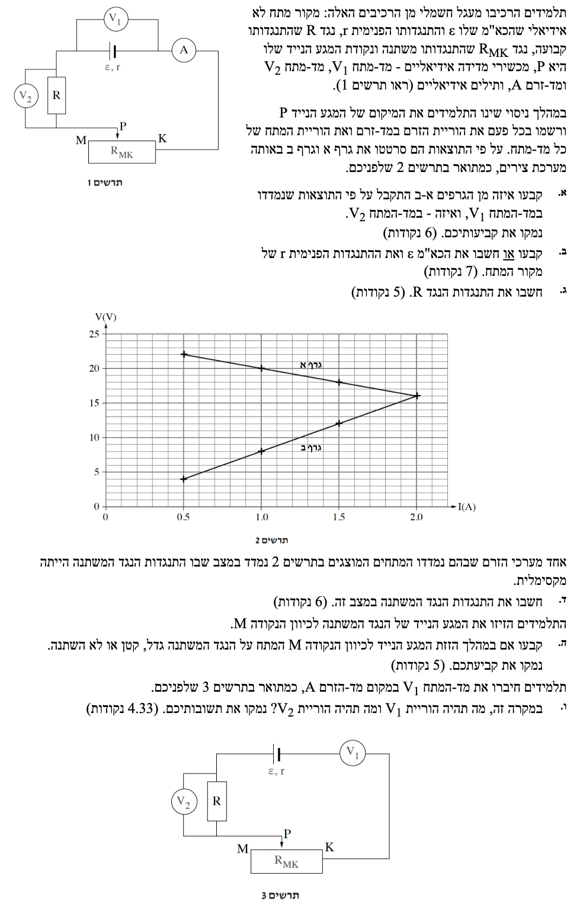

פתרון מלא: בגרות בפיזיקה
חשמל 2023 - שאלה 2
תלמידים יקרים, לפניכם פתרון מודרך ומפורט לשאלת מעגל חשמלי (מעגל זרם ישר). אנו ננתח את המעגל שלב אחר שלב, נקפיד על הגדרות מדויקות, ונשתמש אך ורק בנוסחאות המופיעות בדף הנוסחאות הרשמי. בהצלחה!
עודכן:
--- --:--:--

[תמונת השאלה המקורית]
לא נמצאה תמונה בשם question-image.png באותה תיקייה.
מה נתון:
- מד-המתח \(V_1\) מחובר במקביל למקור המתח (מודד "מתח הדקים").
- מד-המתח \(V_2\) מחובר במקביל לנגד הקבוע \(R\).
- תרשים 2 מציג שני גרפים של מתח כפונקציה של הזרם: "גרף א" בעל שיפוע שלילי, ו"גרף ב" בעל שיפוע חיובי העובר בראשית.
- שלב 0 - המרת יחידות: הנתונים בגרפים מוצגים ביחידות תקניות (וולט ואמפר), לכן אין צורך בהמרה.
מה מחפשים:
לקבוע איזה גרף (א' או ב') מתאים לקריאת מד-המתח \(V_1\) ואיזה מתאים לקריאת מד-המתח \(V_2\), ולנמק.
נוסחאות ועקרונות בשימוש:
\(V_{ab} = \varepsilon - rI\) (מתח הדקים)
\(V = RI\) (חוק אוהם)
פתרון צעד-אחר-צעד:
ננתח את הקשר המתמטי עבור כל אחד ממדי-המתח:
עבור מד-המתח \(V_1\): מד מתח זה מודד את מתח ההדקים של מקור המתח. על פי הנוסחה:
\[ V_1(I) = \varepsilon - r \cdot I \]
זוהי משוואת ישר מהצורה \(y = b - mx\). מכיוון שההתנגדות הפנימית \(r\) תמיד חיובית, השיפוע \(-r\) הוא שלילי. ככל שהזרם גדל, מתח ההדקים קטן. התנהגות זו מתאימה לגרף א'.
עבור מד-המתח \(V_2\): מד מתח זה מודד את המתח על נגד קבוע בעל התנגדות \(R\). על פי חוק אוהם:
\[ V_2(I) = R \cdot I \]
זוהי משוואת ישר מהצורה \(y = mx\), העובר בראשית הצירים \((0,0)\), בעל שיפוע חיובי (כגודל ההתנגדות \(R\)). התנהגות זו מתאימה בדיוק לגרף ב'.
מסקנה: גרף א' מתאים ל- \(V_1\) , גרף ב' מתאים ל- \(V_2\)
טיפ מורה:
שאלות זיהוי גרפים הן קלאסיות בבגרות! הסוד הוא תמיד לקחת את הנוסחה הפיזיקלית ולסדר אותה כך שתיראה כמו משוואת ישר מתמטית \(y = mx + n\). בדקו מי הוא המשתנה הבלתי תלוי (ציר x - הזרם) ומי התלוי (ציר y - המתח), ואז זהו את המשמעות הפיזיקלית של השיפוע (\(m\)) ושל נקודת החיתוך (\(n\)).
מה נתון:
- זיהינו שגרף א' מתאר את הפונקציה \(V_1 = \varepsilon - rI\).
- ניתן לחלץ נקודות מובהקות מגרף א'. נבחר שתי נקודות נוחות לקריאה:
נקודה ראשונה: \((I_1, V_1) = (0.5 \text{ A}, 22 \text{ V})\)
נקודה שנייה: \((I_2, V_2) = (2.0 \text{ A}, 16 \text{ V})\)
מה מחפשים:
את הכוח האלקטרו-מניע (כא"מ) של מקור המתח \(\varepsilon\), ואת התנגדותו הפנימית \(r\).
נוסחאות ועקרונות בשימוש:
\(V_{ab} = \varepsilon - rI\) (מתח הדקים)
\(m = \frac{\Delta y}{\Delta x}\) (שיפוע גרף)
חישוב:
כפי שראינו בסעיף הקודם, שיפוע גרף א' שווה ל- \(-r\). נחשב את השיפוע בעזרת שתי הנקודות שבחרנו:
\[ m = \frac{\Delta V_1}{\Delta I} = \frac{16 - 22}{2.0 - 0.5} = \frac{-6}{1.5} = -4 \, \Omega \]
מכיוון ש- \(m = -r\), נקבל כי ההתנגדות הפנימית היא:
\[ r = 4 \, \Omega \]
כעת, כדי למצוא את הכא"מ \(\varepsilon\), נציב את אחת הנקודות (למשל, \((1.0, 20)\) שגם היא בגרף) במשוואת מתח ההדקים:
\[ V_1 = \varepsilon - r \cdot I \]
\[ 20 = \varepsilon - 4 \cdot 1.0 \]
\[ \varepsilon = 20 + 4 = 24 \, \text{V} \]
מסקנה: \[ \varepsilon = 24 \, \text{V} \quad , \quad r = 4 \, \Omega \]
טיפ מורה:
אפשר למצוא את הכא"מ (\(\varepsilon\)) גם בדרך גרפית, וזה כלי נהדר לבדיקה עצמית! במשוואה \( V_1 = \varepsilon - rI \), כאשר הזרם מאופס (\(I=0\)), מתקיים \( V_1 = \varepsilon \). כלומר, נקודת החיתוך של הגרף עם ציר ה-y (המתח) מייצגת את הכא"מ. אם "תאריכו" את הקו של גרף א' שמאלה עד לציר האנכי, תראו שהוא פוגע בדיוק ב-24V!
מה נתון:
- זיהינו שגרף ב' מתאר את הפונקציה \(V_2 = RI\).
- נבחר שתי נקודות נוחות מקו המגמה של גרף ב':
נקודה ראשונה: \((I_1, V_1) = (1.0 \text{ A}, 8.0 \text{ V})\)
נקודה שנייה: \((I_2, V_2) = (2.0 \text{ A}, 16 \text{ V})\)
מה מחפשים:
את ערכה של ההתנגדות הקבועה \(R\).
נוסחאות ועקרונות בשימוש:
\(V = RI\) (חוק אוהם)
חישוב:
שיפוע גרף ב' מייצג את ההתנגדות \(R\). נוכל פשוט לחשב את השיפוע, או להציב נקודה בודדת (מכיוון שהגרף עובר בראשית):
\[ R = \frac{\Delta V_2}{\Delta I} = \frac{16 - 8}{2.0 - 1.0} = \frac{8}{1} = 8 \, \Omega \]
מסקנה: \[ R = 8 \, \Omega \]
מה נתון:
- מהסעיפים הקודמים אנו יודעים: \(\varepsilon = 24 \text{ V}, \, r = 4 \, \Omega, \, R = 8 \, \Omega\).
- נתון חדש: אחד מערכי הזרם בתרשים 2 נמדד כאשר התנגדות הנגד המשתנה הייתה מקסימלית.
מה מחפשים:
את התנגדות הנגד המשתנה במצב זה (נסמן כ- \(R_{var}\)).
נוסחאות ועקרונות בשימוש:
\(R_{T} = \Sigma R_i\) (התנגדות שקולה בטור)
\(\Sigma \varepsilon = \Sigma IR\) (חוקי קירכהוף)
חישוב:
על פי הקשר \(I = \frac{\varepsilon}{R_{tot}}\), כאשר התנגדות המעגל הכוללת (\(R_{tot}\)) היא מקסימלית, הזרם הזורם במעגל יהיה מינימלי. ההתנגדות הכוללת גדלה כאשר אנו מגדילים את התנגדות הנגד המשתנה.
נסתכל בגרפים בתרשים 2: ערך הזרם המינימלי שנמדד בניסוי הוא הקצה השמאלי של הגרפים, כלומר \(I = 0.5 \text{ A}\).
נרשום את משוואת הלולאה עבור הזרם במעגל:
\[ I = \frac{\varepsilon}{r + R + R_{var}} \]
נציב את הנתונים הידועים לנו יחד עם הזרם המינימלי, כדי לחלץ את ההתנגדות המקסימלית של הנגד המשתנה:
\[ 0.5 = \frac{24}{4 + 8 + R_{var}} \]
\[ 0.5 \cdot (12 + R_{var}) = 24 \]
\[ 6 + 0.5 R_{var} = 24 \]
\[ 0.5 R_{var} = 18 \]
\[ R_{var} = 36 \, \Omega \]
מסקנה: \[ R_{var} = 36 \, \Omega \]
טיפ מורה:
שימו לב לזיהוי הלוגי: "התנגדות מקסימלית במעגל טורי גוררת זרם מינימלי". תמיד חפשו את נקודות הקצה בגרפים (מינימום ומקסימום), שם מסתתר המידע על המצבים הקיצוניים של הראוסטט (מגע נייד בקצה אחד או בקצה השני).
מה נתון:
- התלמיד מזיז את המגע הנייד \(P\) לכיוון הנקודה \(M\).
- הזרם נכנס לנגד המשתנה בנקודה \(K\) ויוצא מהמגע הנייד \(P\), לכן החלק הפעיל של הנגד הוא \(KP\).
- לפי תרשים 2, ככל שהזרם קטן, ההפרש האנכי בין גרף א' לגרף ב' גדל.
מה מחפשים:
לקבוע אם המתח על הנגד המשתנה גדל, קטן או לא השתנה כתוצאה מהזזת המגע, ולנמק.
נוסחאות ועקרונות בשימוש:
\(V_{ab} = \Sigma V_{ext}\) (מתח ההדקים נופל על המעגל החיצוני)
\(V_{var} = V_1 - V_2\) (חיסור מתחים)
פתרון מנומק בדרך גרפית:
ראשית, נבין מה קורה לזרם במעגל. הזרם זורם דרך החלק \(KP\) של הנגד המשתנה. כאשר מזיזים את המגע הנייד \(P\) שמאלה לכיוון \(M\), אורך התיל הפעיל מ-\(K\) ל-\(P\) גדל. לכן, ההתנגדות של הנגד המשתנה (\(R_{var}\)) גדלה.
כתוצאה מכך, ההתנגדות הכוללת של המעגל גדלה, ולכן הזרם הראשי במעגל (\(I\)) קטן.
כעת ננתח את המתחים במעגל: מד המתח \(V_1\) מודד את מתח ההדקים השלם של המקור. מתח זה מתחלק על פני שני הרכיבים המחוברים בטור במעגל החיצוני: הנגד הקבוע (שעליו נמדד \(V_2\)) והנגד המשתנה (שעליו נופל המתח \(V_{var}\)). לכן:
\[ V_1 = V_2 + V_{var} \]
נבודד את המתח על הנגד המשתנה, שהוא בעצם ההפרש בין שני מדי-המתח:
\[ V_{var} = V_1 - V_2 \]
מבחינה גרפית, \(V_{var}\) מיוצג על ידי ההפרש האנכי בין גרף א' (\(V_1\)) לגרף ב' (\(V_2\)). ראינו מקודם שהזרם \(I\) הולך וקטן. כאשר אנו נעים בגרף שמאלה (לכיוון זרמים נמוכים יותר), אנו רואים בבירור שהמרחק בין גרף א' לגרף ב' הולך וגדל.
מסקנה: המתח על הנגד המשתנה גדל.
טיפ מורה:
לא "תפסתם" את הדרך הגרפית בזמן אמת בבחינה? אל דאגה! הדרך האלגברית עובדת תמיד ואין שום סיבה להילחץ. אפשר פשוט לבטא את המתח על הנגד המשתנה כפונקציה של ההתנגדות והזרם (למשל דרך חוק קירכהוף: \( V_{var} = \varepsilon - I(r+R) \)), ולנתח בקלות: ברגע שההתנגדות עולה, הזרם יורד, ולכן האיבר שמחסרים מהכא"מ קטן, מה שאומר ש-\(V_{var}\) בהכרח גדל. הכלים שלכם חזקים – תסמכו על עצמכם ועל המשוואות, הן תמיד יובילו אתכם בבטחה לתשובה!
מה נתון:
- התלמידה ניתקה את מד-המתח \(V_1\) מחיבורו במקביל למקור.
- היא חיברה את \(V_1\) בטור במעגל, בדיוק במקום שבו היה מד-הזרם (תרשים 3).
- מדובר במכשירי מדידה אידיאליים. התנגדות של מד-מתח אידיאלי שואפת לאינסוף (\(R_V \rightarrow \infty\)).
מה מחפשים:
מה תהיה הוריית (קריאת) מד-המתח \(V_1\) ומה תהיה הוריית מד-המתח \(V_2\) במקרה זה, ונימוק.
נוסחאות ועקרונות בשימוש:
\(V = RI\) (חוק אוהם)
\(\Sigma \varepsilon = \Sigma IR\) (חוקי קירכהוף)
ניתוח וחישוב:
כיוון שמד-מתח אידיאלי הוא בעל התנגדות אינסופית, חיבורו בטור גורם לכך שההתנגדות הכוללת של המעגל שואפת לאינסוף. כתוצאה מכך, הזרם החשמלי במעגל מתאפס: \(I = 0 \text{ A}\) (המעגל מתנהג כ"מעגל פתוח").
קריאת \(V_2\): מד מתח זה מחובר במקביל לנגד \(R\). לפי חוק אוהם, מכיוון שאין זרם, לא נופל עליו מתח:
\[ V_2 = I \cdot R = 0 \cdot 8 = 0 \, \text{V} \]
קריאת \(V_1\): מד המתח \(V_1\) נמצא כעת בטור עם שאר הרכיבים. נכתוב את משוואת הלולאה מחדש, תוך התייחסות למתח שנופל על מד-המתח עצמו (נסמנו כ- \(V_1\)):
\[ \varepsilon = I \cdot r + V_1 + I \cdot R_{var} + I \cdot R \]
מכיוון שהזרם אפס (\(I = 0\)), כל האיברים של מפל המתח על הנגדים מתאפסים (אין עליהם איבוד אנרגיה):
\[ \varepsilon = 0 \cdot r + V_1 + 0 \cdot R_{var} + 0 \cdot R \]
\[ \varepsilon = V_1 \]
מכאן נובע שמד המתח ימדוד את מלוא הכוח האלקטרו-מניע של המקור, כלומר \(V_1 = 24 \text{ V}\).
מסקנה:
הוריית \(V_1\) תהיה: \(24 \, \text{V}\)
הוריית \(V_2\) תהיה: \(0 \, \text{V}\)
טיפ מורה:
דרך נהדרת ופשוטה להבין את התופעה הזו היא בעזרת "מסלולים שווי פוטנציאל". תחשבו על זה כך: כאשר הזרם במעגל הוא אפס (בגלל ההתנגדות העצומה של מד המתח), אף רכיב בדרך לא צורך מתח (כי מתקיים \(V = I \cdot R = 0\)). המשמעות היא שכל הצד הימני של המעגל עד למד-המתח נמצא בדיוק באותו פוטנציאל של ההדק האחד של המקור, וכל הצד השמאלי שלו נמצא בפוטנציאל של ההדק השני. בעצם, המסלולים מתנהגים כחוטים ריקים ללא מפל מתח, וזה כאילו חיברנו את שתי רגלי מד-המתח ישירות לשני ההדקים של הסוללה! לכן הפרש המתחים שהוא מודד שווה בדיוק לכא"מ.
🙋♂️ המורה, יש לי שאלה:
"אם אמרנו שהזרם במעגל הוא אפס, ולפי חוק אוהם מתח שווה לזרם כפול התנגדות (\(V=I \cdot R\)), אז גם על מד-המתח צריך ליפול מתח של אפס! איך זה הגיוני שהוא מראה 24 וולט ולא אפס כמו שאר הרכיבים?"
👨🏫 תשובה:
זו השאלה הכי טובה שאפשר לשאול כאן! היא נוגעת בדיוק בפער שבין פיזיקה "על הנייר" לבין פיזיקה במעבדה. כדי לעשות סדר בראש, בואו נחלק את זה לשניים:
-
במבחן הבגרות (המודל האידיאלי): אנו מתייחסים למד-מתח כבעל התנגדות אינסופית. במצב כזה, הוא מתנהג בדיוק כמו מתג פתוח (נתק). חוק אוהם הרגיל לא ממש עוזר לנו עליו ישירות (כי מקבלים "אפס זרם כפול אינסוף התנגדות"). במקום זאת, נשתמש בחוק שימור האנרגיה של קירכהוף: הסוללה "דוחפת" אנרגיה של 24V. אם שאר הנגדים לא צורכים כלום, כל הלחץ (המתח) נופל בדיוק על הנתק עצמו.
-
במעבדה (במציאות): במציאות מד-מתח הוא לא באמת נתק מוחלט, אלא נגד ענק. בפועל כן זורם זרם זעיר במעגל. כשהזרם האפסי הזה עובר בנגדים הרגילים, המתח עליהם הוא כמעט אפס (זניח לחלוטין). לכן, כמעט כל ה-24V שמספקת הסוללה נופלים על מד-המתח (לו יש התנגדות של מיליוני אוהמים). המודל בבגרות פשוט "מעגל" את הזניח הזה לאפס ומניח שהמעגל פתוח לחלוטין.